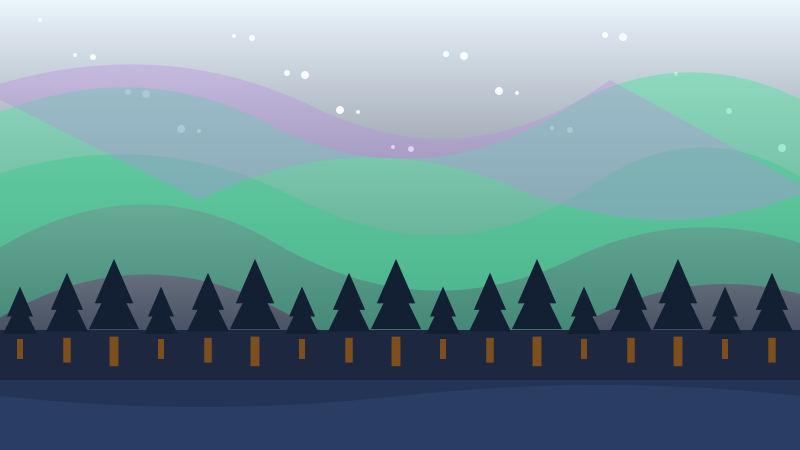
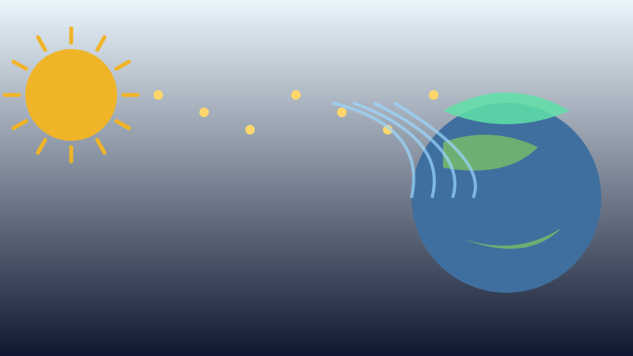

🌌 For Kids
Why the Sky Glows Green in the North
On a cold clear night in the north, the sky can turn green and start to move.

It starts at the Sun
The Sun is not quiet. As well as light and heat, it throws out a constant stream of tiny pieces, far too small to see. Scientists call this the solar wind.
Some of those pieces reach Earth. Our planet is like a giant magnet, and that magnetism steers them away from the middle of the world and down towards the top and the bottom, the North and the South.
High above your head they crash into the gases in the air. Every crash makes one tiny flash of light. Billions of flashes at once is what you are looking at.
Why Canada gets such a good view
Earth's magnetic north pole sits in the Canadian Arctic. That puts a huge part of Canada right under the ring where the lights appear.
Yellowknife in the Northwest Territories is one of the best places on the whole planet to watch them. Whitehorse in Yukon and Churchill in Manitoba are wonderful too.
You need three things: a dark sky, no clouds, and patience. Winter is best, because the nights up there are very long.

How high, and why the colours
The lights are much higher than you think. They usually happen between 100 and 300 kilometres up. An aeroplane flies at about 10 kilometres, so the lights are far above any plane.
Astronauts on the space station are at about the same height as the lights, and sometimes look sideways at them instead of up.
The colour depends on which gas gets hit, and how high up. Green comes from oxygen lower down and is the colour you see most. Red comes from oxygen much higher up. Pink and dark red come from nitrogen near the bottom edge.
Do they make a sound?
People in the north have said for a very long time that the lights crackle and hiss. For years scientists said that was impossible, because the lights are far too high for any sound to reach the ground.
Then researchers actually recorded faint crackling sounds during very strong displays. The sounds seem to be made close to the ground, not up in the lights themselves.
It is rare, and scientists are still working out exactly how it happens. So the honest answer is: sometimes, quietly, and we do not fully know why yet.
Words to know
- Solar wind
- The stream of tiny pieces the Sun blows out into space all the time.
- Magnetic
- Able to pull or push certain things without touching them, the way a fridge magnet works.
- Atmosphere
- The blanket of air wrapped around our planet.
Now try three questions
No timer and no score to worry about. Every answer tells you why.
About this quiz
This story explains what makes the northern lights, why Canada is one of the best places on Earth to see them, how high above the ground they happen, why they come in different colours, and whether they really make a sound.
It is written in short sentences for children aged six to nine, with a picture drawn for this site and three questions at the end. Tap the Read aloud button and the page will read the questions out loud.
More to explore
More true Canada stories for kids